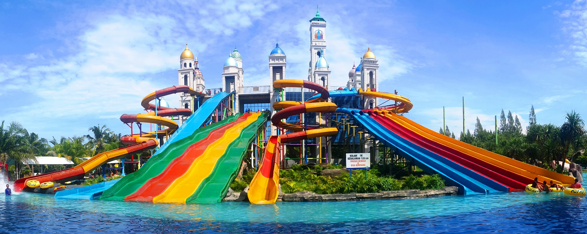

Jepara Ourland Park

Jepara Ourland Park "J.O.P" (sebelumnya bernama Jepara Ocean Park) disebut juga Jateng Park 1 adalah taman wisata terpadu satu-satunya di Jawa Tengah yang termegah, di atas lahan 11Ha pinggir Pantai Mororejo Jepara dengan konsep Timur Tengah-Eropa-India. Siapapun yang berkunjung di Jepara Ourland park akan merasakan sensasi yang tidak ada duanya dimanapun. "Sport, Education, Entertaiment, Relaxation, Game" terdapat di Jepara Ourland Park.
Meskipun Jepara Ourland Park berada di pesisir kawasan pantai Mororejo tidak membuat suasana disana gersang. Sebab di setiap sudut arena wisata memiliki taman dan pepohonan hijau yang membuat suasana sejuk dan rindang. Ada yang unik dengan bangunan wahana wisata air ini, yaitu menyerupai kubah masjid berwarna-warni. Jika yang belum tahu pasti kubah cantik yang terlihat dari jauh itu adalah kubah masjid yang megah.